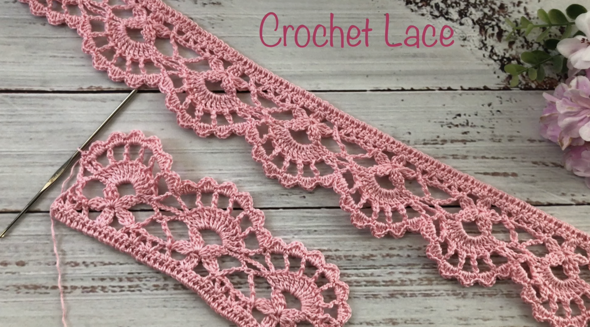
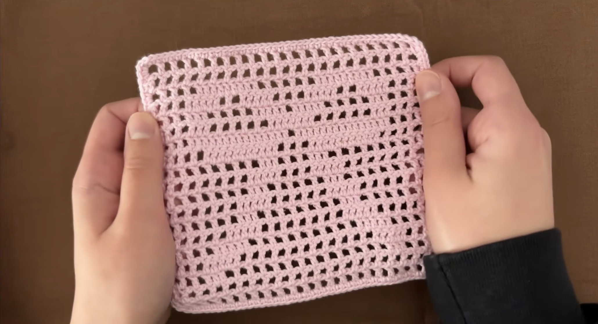
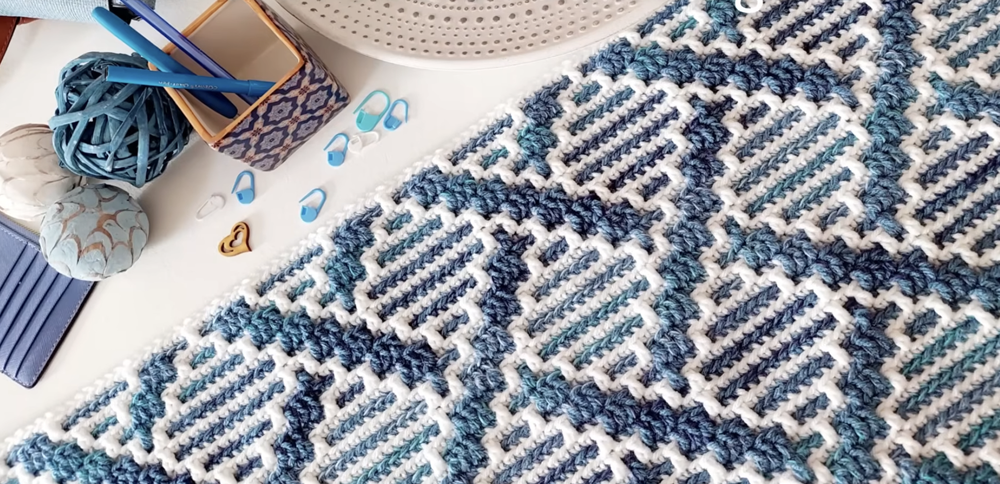

This project is more advanced because it requires following a more complex pattern and series of steps, and uses thinner yarn, which is harder to work with. here.

This project is in between intermediate and advanced in level, depending on how far the maker goes with the technique taught in this video via a bow pattern. Find the video here.

This pattern can be used in a multitude of projects, but comes under an intermediate level because it requires switching out yarn colors, and keeping track of yarn colors and patterns while doing so. Find the video here.